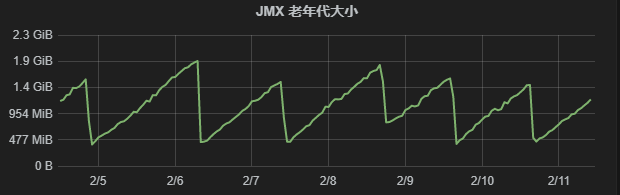
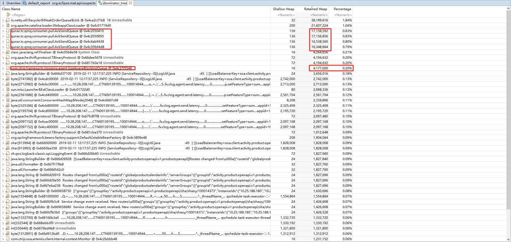
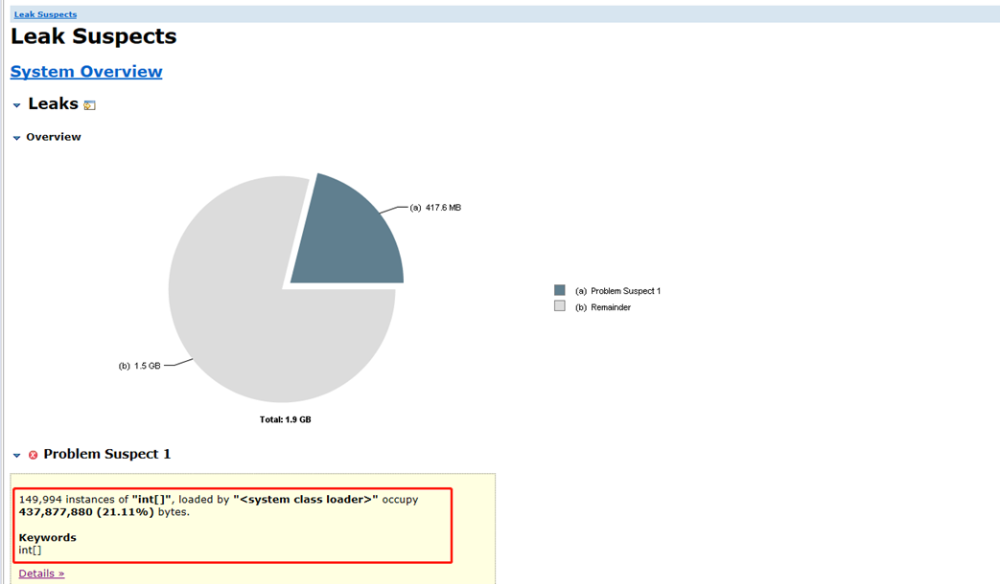
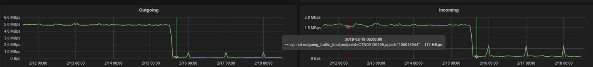
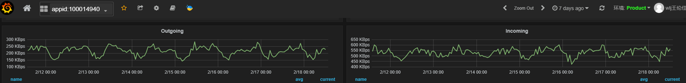
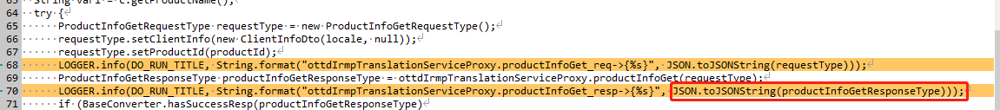
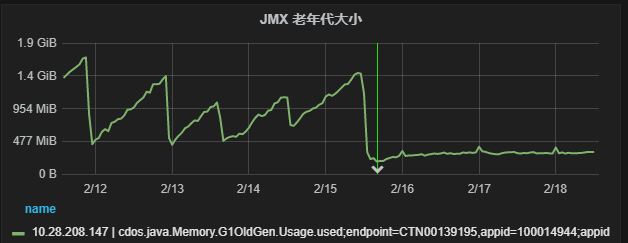
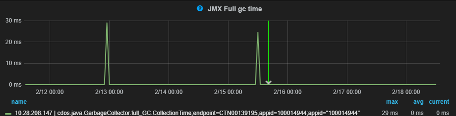

//############################### Step1 ###############################
发件人: wlj王伦佳
发送时间: 2019年2月11日 13:56
收件人: xxx
抄送: xxx
主题: 答复: [问题告警]FullGC过于频繁:存在大于1s的FullGC

从老年代一周的走势图来看，老年代的最大大小在2G左右，当达到这个阈值就会触发一次full gc。从以下cat可以验证：
http://cat.ctripcorp.com/cat/r/h?date=2019020608&ip=10.28.208.147&ip=10.28.208.147&domain=100014944
http://cat.ctripcorp.com/cat/r/h?date=2019020710&ip=10.28.208.147&ip=10.28.208.147&domain=100014944
http://cat.ctripcorp.com/cat/r/h?date=2019020915&ip=10.28.208.147&ip=10.28.208.147&domain=100014944
可以看的出来，每次full gc时间都是在1000ms-2000ms之间。
以上说明本次full gc的触发是正常的并且耗费的时间属于正常的。
Q&A：
Q：为什么每次full gc都会需要1000ms-2000ms的时间？
A：参考：http://vi.fx.ctripcorp.com/10.28.208.147:8080/vi/index.html#/component/custom/vi.vmsummary/vm%20summary
可以看到最大堆大小为12G，初始堆大小7G。过大的堆会造成在full gc的时候出现时间比较长的情况。
Q：如何优化？
A：参考：http://conf.ctripcorp.com/pages/viewpage.action?pageId=150164373#id-2.%E7%94%A8%E6%88%B7%E6%89%8B%E5%86%8C-2.2.2FullGC%E8%80%97%E6%97%B6%E8%BF%87%E9%95%BF提供以下优化方案：
优化方案：
* 缩小年老代
由于GC算法在执行Full GC的阈值设定上一般是以年老代的占用量为标准的，单次回收量过大说明在执行Full GC时年老代总的占用空间过大。所以可以考虑适当缩小年老代，提升Full GC的频率，降低单次回收的内存大小，进而缩短单次Full GC的耗时。
* 人工触发Full GC
如果Full GC的频率很低，达到数天一次，可以考虑在应用业务的低谷时通过代码调用System.gc()强制触发一次Full GC，即保留大内存的业务冗余，也可以适当较低单次Full GC耗时过长的可能。
* 优化Full GC算法
由于Java 7 Server模式默认的Full GC算法为PS MarkSweep。这个算法是一个并行GC算法，但它的执行全程都是STW的，对应用响应时间的影响较大。可以考虑切换至并发GC算法CMS。CMS的GC过程共分为6个阶段，其中只有2个阶段是STW的，其他4个阶段均可以与应用代码并发执行。对吞吐量较为敏感的应用建议改用CMS算法，可以对Full GC耗时较长的问题有一定的改善。
Q：该问题会不会对线上造成影响？
A：目前来看job用的比较多的就是productchangejob，full gc造成的执行停顿不会对该job造成影响
结论：这是一次正常的gc，一般来说不需要进行过多的优化，如果缩小年老代会造成full gc频率过高。因为对应用不会造成太大影响所以不需要进行人工gc。Gc算法在jdk1.8默认都是G1：
一般来说是够用的，除非需要特别大的吞吐量，可以采用CMS，但是2G的大小应该是不需要采用CMS的
以上结论是我个人分析的观点，后面还需要验证，目前正在使用heap dump进行分析，希望从代码层面找到造成年老代过大的原因再进行优化
//############################### Step2 ###############################
发件人: wlj王伦佳
发送时间: 2019年2月11日 16:52
收件人: xxx
抄送: xxx
主题: 答复: [问题告警]FullGC过于频繁:存在大于1s的FullGC
续上一个回复
导致老年代越来越多的原因一般有两个：1.对象过大，直接从新生代进入到老年代；2.对象存活时间比较长。
使用分析工具mat(eclipse插件，可独立使用)分析从该机器上抓取下来的heap dump，结果如下：
大对象：

从上面可以看到在携程框架和应用程序范围内：qmq框架的ackSendQueue类产生的大对象占用了大量的堆内存，clog框架的SizeAwareBlockingQueue类也占用了比较大的堆内存。除此之外基本都是java中的基本数据类型占用的比较多。
从业务上也基本可以验证，因为每条message都要ack，每天都有几千条message，而ack的对象又比较大。同时具备大和多的特点从而导致老年代内存占用持续上升。
对象存活时间比较长：
一般进入到老年代就说明对象存活时间比较长。导致这个原因除了对象大之外还有可能就是内存泄露

这张图片显示可能存在的内存泄露，从红框里面看到主要是int数组，一般来说如果是程序中的具体类，那么就需要考虑代码中是不是有内存泄露的问题。
结论：代码正常，没有重大内存泄漏；框架和jvm运行环境有大对象导致堆内存过大，属于正常。
发件人: wlj王伦佳
发送时间: 2019年2月18日 14:24
收件人: xxx
抄送: xxx
主题: 答复: [问题告警]FullGC过于频繁:存在大于1s的FullGC
Dear All
关于这个问题的分析和最终的结论
分析：
1. 上周本来说是改成消息监听的模式，但是后来跟涛哥讨论了下，问题的原因并不一定是多线程ACK导致的，也是为了查清楚问题的本质，我们仍然打算使用定制化多线程主动拉的模式来做（主动拉模式更加高级，因为我们可以根据实际业务量调整每次拉取的数量从而保证性能的稳定而不是被动依赖于消息通道中的消息数量）
2. 一开始我们认为是qmq的ack导致的，但是和qmq框架部门沟通之后发现那边并没有看出来什么问题。后来涛哥在查看job吞吐量的时候发现异常：吞吐量极高

以上是job上周五最后一次发布之前和之后的对比这是和4940对比，

4940也才250kbps
3. 为什么吞吐量这么高？在查看日志的时候发现有比较大的日志对象存在，从代码中发现ProductNameJob中曾经记录过ottdIrmpTranslationServiceProxy.productInfoGet返回体，记录如下：

看日志发现这个对象日志非常大，里面记录了大量的schema结构，但是从白鳍框架生成的对象来看里面对schema接口标注了@JsonIgnore。理论上不应该会有schema结构，后来从网上查找FastJson的用法，发现FastJson中使用@JSONField来对属性进行过滤而不是@JsonIgnore
4.接下来把所有的fastjson全部转换为gson，经过三天的测试，发现吞吐量显著下降，full gc也没有发生，另外老年代大小也显著下降并维持稳定：


结论：FastJson和携程框架的标准不一致导致在log的时候产生大对象从而导致full gc，改成gson之后该问题从目前来看已经被解决。
这个问题让我们对fastjson框架有个新的认识，在以后的代码中尽量使用gson。